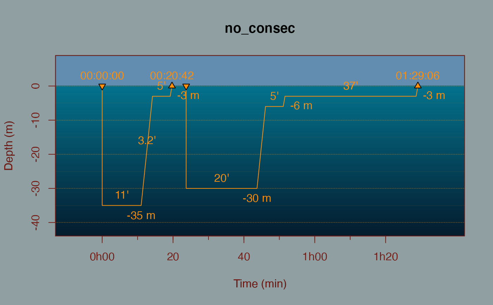
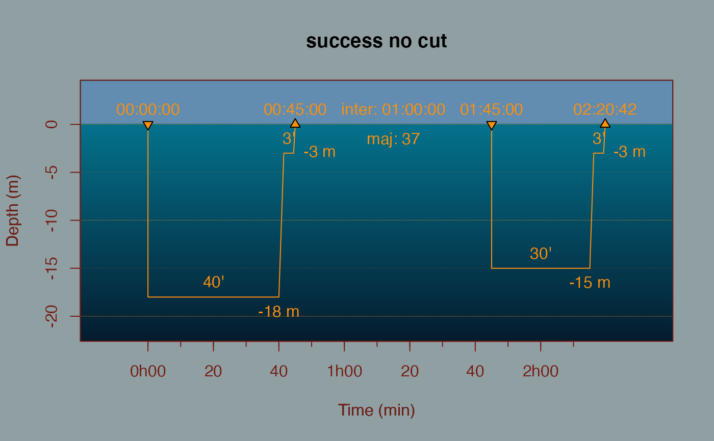
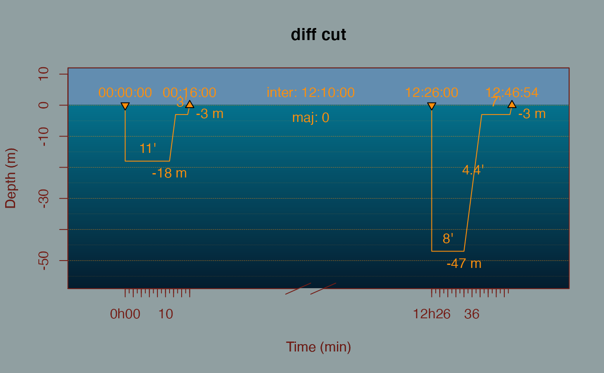

plot.ndive.RdPlot the dive curve depending on time and depth. Only represent square profile
# S3 method for ndive plot( x, ..., dtr_print = FALSE, hour_print = TRUE, line_print = TRUE, deco_print = TRUE, depth_print = TRUE, time_print = TRUE, def_cols = FALSE, cut_inter = 60, legend = FALSE, add = FALSE )
| x | an object of class ndive. |
|---|---|
| ... | every argument for the |
| dtr_print | set to |
| hour_print | set to |
| line_print | set to |
| deco_print | set to |
| depth_print | set to |
| time_print | set to |
| def_cols | set to |
| cut_inter | 60 by default above which the plot is cut in x axis to maintain readibility |
| legend | set to |
| add | set to |
Jaunatre Maxime <maxime.jaunatre@yahoo.fr>
#> Warning: A minimum of 15 minutes is requiered between dives to consider them #> as different dives.# Consecutive dives with second impossible d <- ndive(dive1 = dive(35,11), dive2 = dive(30,20), inter = 4)#> Warning: A minimum of 15 minutes is requiered between dives to consider them #> as different dives.# Successive dive when inter <= cut_inter d <- ndive(dive1 = dive(18,40), dive2 = dive(15,30), inter = 60) plot(d, def_cols = TRUE, main = 'success no cut')# Successive dive when inter > cut_inter d <- ndive(dive1 = dive(20,40), dive2 = dive(20,30), inter = 121) plot(d, def_cols = TRUE, main = 'success cut')# Successive dive with second impossible d <- ndive(dive1 = dive(18,40), dive2 = dive(35,30), inter = 120)#> Warning: Second dive impossible due to majoration of time# Successive dive with second impossible d <- ndive(dive1 = dive(62,11), dive2 = dive(15,30), inter = 120)#> Warning: Second dive impossible in less than 12h after a dive a 60 more meters# Different dives d <- ndive(dive1 = dive(18,11), dive2 = dive(47,8), inter = 730) plot(d, def_cols = TRUE, main = 'diff cut')